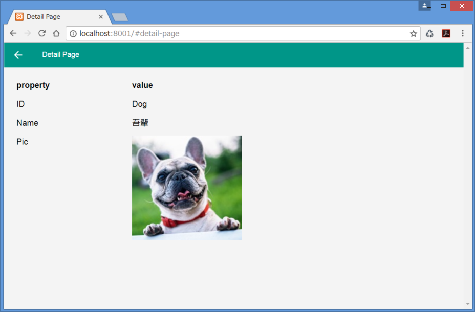

<article>
    <script type="text/template" id="documents-tutorial-loginspa-detailpage">
        <h1>LoginSPASample 4) 詳細ページの作成</h1>
        <p>
            　ここからはログインしたユーザーの詳細情報を表示する詳細ページの実装に取り掛かります。
        </p>

        <h3 id="410">4-1) Page の編集</h3>
        <!-- ****************************************************** -->
        <h4 id="411">4-1-1) 詳細ページの UI リソースを追加する</h4>
        <p>
            　詳細ページの UI リソースとなる app/templates/detail-page.html を追加します。detail-page.html を新規作成し、
            次のコードを実装してください。赤文字の部分は、このアプリ特有のコードを意味します。<br>
            　&lt;thead&gt; に置いたタイトル " priority " の下にログインユーザー情報の項目名 " ID "、" Name "、" Pic " が列挙され、 タイトル " value " の下には対応する ユーザー ID 、ユーザー名、顔写真 を表示することになります。
            &lt;script&gt; 要素は上記を画面表示する際に用いるテンプレートを登録しています。
        </p>
        <pre>
&lt;article data-role="page" id="<span style="color: #cc0000;"></strong>page-detail-page</strong></span>" data-theme="cdp"&gt;
    &lt;header data-role="header" data-position="<span style="color: #cc0000;"></strong>fixed</strong></span>" data-tap-toggle="false"&gt;
        <span style="color: #cc0000;"><strong>&lt;button class="command-back ui-back-indicator ui-btn ui-btn-icon-left"&gt;Back&lt;/button&gt;
        &lt;h1&gt;Detail Page&lt;/h1&gt;</strong></span>
    &lt;/header&gt;
    &lt;section data-role="content"&gt;
        <span style="color: #cc0000;"><strong>&lt;table data-role="table" class="ui-responsive" id="table-detail-view"&gt;
            &lt;thead&gt;
                &lt;tr&gt;
                    &lt;th data-priority="2"&gt;property&lt;/th&gt;
                    &lt;th data-priority="1"&gt;value&lt;/th&gt;
                &lt;/tr&gt;
            &lt;/thead&gt;
            &lt;tbody id="page-detail-page-user-view" /&gt;
        &lt;/table&gt;</strong></span>
    &lt;/section&gt;
    <span style="color: #cc0000;"><strong>&lt;script type="text/template" id="page-detail-page-properties-list"&gt;
        &lt;tr&gt;
            &lt;td&gt;ID&lt;/td&gt;
            &lt;td&gt;
                &lt;div id="text-detail-id"&gt;&#123;&#123;user.id&#125;&#125;&lt;/div&gt;
            &lt;/td&gt;
        &lt;/tr&gt;
        &lt;tr&gt;
            &lt;td&gt;Name&lt;/td&gt;
            &lt;td&gt;
                &lt;div id="text-detail-name"&gt;&#123;&#123;user.name&#125;&#125;&lt;/div&gt;
            &lt;/td&gt;
        &lt;/tr&gt;
        &lt;tr&gt;
            &lt;td&gt;Pic&lt;/td&gt;
            &lt;td&gt;&lt;img id="img-detail-picture" src="/res/&#123;&#123;user.pic&#125;&#125;" /&gt;&lt;/td&gt;
        &lt;/tr&gt;
    &lt;/script&gt;</strong></span>
&lt;/article&gt;
        </pre>
        
        
        <h4 id="412">4-1-2) DetailPage クラスに機能を追加する</h4>
        <p>
            　詳細ページの表示を管理する DetailPage クラスに機能を追加します。
            DetailPage クラスに DetailPageUserView クラスを追加して、ログインしたユーザーの詳細情報を詳細ページに表示する準備をします
            （ DetailPageUserView クラスはこのあとすぐ実装します）。<br>
            app/scripts/view/detail-page.ts を開き、下記の赤文字のコードを追加してください。
        </p>
        <pre>
import {
    PageView,
    registerPage,
} from "cdp/ui";
<span style="color: #cc0000;"><strong>import { DetailPageUserView } from "./detail-page-user-view";</strong></span>

const TAG: string = "[view.DetailPage] ";

class DetailPage extends PageView {
    <span style="color: #cc0000;"><strong>private _userView: DetailPageUserView = null;</strong></span>
    constructor() {
        super("/templates/detail-page.html", "page-detail-page", {
            route: "detail-page"
        });
    }
    onInitialize(event: JQuery.Event): void {
        super.onInitialize(event);
    }
    events(): any {
        return {

        }
    }
    render(): DetailPage {
        <span style="color: #cc0000;"><strong>this._userView.render();</strong></span>
        return this;
    }
    <span style="color: #cc0000;"><strong>
    onPageInit(event: JQuery.Event){
        super.onPageInit(event);
        let $targetDom = this.$el.find("#page-detail-page-user-view");
        this._userView = new DetailPageUserView ( $targetDom );
        this.render();
    }
    onPageRemove(event: JQuery.Event){
        super.onPageRemove(event);
        this._userView.remove();
        this._userView = null;
    }
    </strong></span>
}
registerPage(DetailPage);
        </pre>

        <div class="hint-container">
            <h4>【 DetailPage クラスの解説 】</h4>
            <p>
                1) PageView, registerPage を cdp/ui モジュールからインポートするところは、LoginPage クラスと同じです。
            </p>
            <p>
                2) クラス定義冒頭の "_userView" は DetailPageUserView クラスのオブジェクトであり、
                ログイン中ユーザーの詳細情報を表示するために用います。<br>
            </p>
            <p>
                3) onPageInit() について<br>
            </p>
                <ul>
                    <li>このメソッドは 詳細ページが表示される際に実行されます。LoginPage クラスの補足説明と同様です。</li>
                    <li>this.$el には DetailPage クラスの constructor() において id="page-detail-page" を有する要素 &lt;article&gt; が設定されており、
                        DOM 操作の起点となります。</li>
                    <li>this.$el.find("#page-detail-page-user-view") は、 detail-page.html 内で id="page-detail-page-user-view" を有する
                        要素 &lt;tbody&gt; を検索して $targetDom に格納しています。<br>
                        $targetDom を引数として DetailPageUserView をインスタンス化することで、DetailPageUserView インスタンス側で &lt;tbody&gt; 要素配下に
                        ユーザー詳細情報の表示を実行します。</li>
                </ul>
            <p>
                4) render() について<br>
                　このメソッド内の this._userView.render(); の render() は、DetailPageUserView クラスに定義された render() のことです。
            </p>
            <p>
                5) onPageRemove()について<br>
                　このメソッドは、詳細ページを離れるときに DetailPageUserView のインスタンスを削除します。
                インスタンスが残り続けることで起こる不具合を防止するためです。
            </p>
        </div>


        <h3 id="420">4-2) View の追加</h3>
        <!-- ****************************************************** -->
        <h4 id="421">4-2-1) DetailPageUserView クラスを追加する</h4>
        <p>
            　DetailPageUserView クラスは DetailPage クラス内で呼び出され、
            詳細ページにログイン中のユーザーの詳細情報 " ID ", " Name ", " Pic " の表示を行う View クラスです。<br>
            app/scripts/view/detail-page-user-view.ts を新規作成し、下記のように DetailPageUserView クラスを実装してください。
        </p>
        <pre>
import {
    View,
    JST,
    getTemplate
} from "cdp/ui";
import { User } from "../model/user"
import { LoginState, getLoginStateInstance } from "../model/login-state";

const TAG: string = "[view.DetailPageUserView] ";

export class DetailPageUserView extends View&lt;User&gt; {
    private _$user: JQuery = null;
    private _template: JST = null;

    constructor(target: JQuery, options?: Backbone.ViewOptions&lt;User&gt;) {
        super(options);
        this._$user = target;
        this._template = getTemplate("#page-detail-page-properties-list");
    }
    events() {
        return {
        }
    }
    render(): DetailPageUserView {
        let activeUser: User = getLoginStateInstance().getActiveUser();
        let userHtml: string = this._template({
            user: activeUser? activeUser.toJSON() : null
        });
        this._$user.append( $(userHtml) );
        return this;
    }
}
        </pre>
        
        <div class="hint-container">
            <h4>【 DetailPageUserView クラスの解説 】</h4>
            <p>
                1) 冒頭の import 文で cdp/ui モジュールから、View, JST, getTemplate を読み込んでいます。これは LoginPageUserListView クラスの場合と同じです。
            </p>
            <p>
                2) 2 番目 import 文は、User クラス、LoginState クラス、getLoginStateInstance シングルトンを読み込んでいます。
            </p>
            <p>
                3) クラス定義冒頭の "_$user" はログイン中のユーザーを扱うための jQuery オブジェクト、"_template" は コンパイル済テンプレートを格納するための変数です。
            </p>
            <p>
                4) constructor() について
            </p>
                <ul>
                    <li>第1引数 "target" には、DetailPage クラスの onPageInit() メソッド内で DetailPageUserView クラスがインスタンス化される際に引数 $targetDom が渡されます。<br>
                        $targetDom は detail-page.html の &lt;tbody id="page-detail-page-user-view"&gt; 要素を指しています。</li>
                    <li>getTemplate() は 引数の jQuery セレクタ "#page-detail-page-properties-list"）で指定された detail-page.html 中の &lt;script&gt; に定義されたテンプレートを取得し、コンパイルします。
                        コンパイルした結果は this._template に格納されます。</li>
                </ul>
            <p>
                5) render() について
            </p>
                <ul>
                    <li>このメソッドは詳細ページが表示されるときに呼ばれます。<br>
                        DetailPage クラスの onPageInit() メソッド内で this.render() が実行されると 
                        DetailPage クラスの render() メソッドが実行され、その中の this._userView.render() から呼ばれます。</li>
                    <li>変数 activeUser はログインユーザーを格納したオブジェクトです。<br>
                        getLoginStateInstance().getActiveUser() で activeUser 属性を有するユーザーをピックアップしています。</li>
                    <li>変数 userHtml はログインユーザーの詳細情報 " id ", " name ", " pic " を、
                        detail-page.html に定義されたテンプレートに載せて HTML 文字列に変換したものです。<br>
                        この文字列は this._$user.append( $(userHtml) ) により、detail-page.html の &lt;tbody&gt; 要素配下に
                        追加され、詳細ページの表示が完成します。</li>
                </ul>
        </div>


        <h3 id="430">4-3) LoginSPASample の動作を確認する</h3>
<!-- ****************************************************** -->
        <p>
            　これでアプリの実装は完了しました。ビルドして動作を観察してみましょう。
            ビルドするにはプロジェクトルートで次のコマンドを実行します。 
            www フォルダーに生成された Web アプリをローカルサーバーで開き（例えば http://localhost:8080）、
            ログインすると次のような画面が表示されます。
        </p>
        <p>
            　但し、コンパイル・ビルドする前に app/scripts/vew/loader.ts に detail-page.ts と detail-page-user-view を追加するのを忘れてはいけません。
            これにより、ここに登録した View はアプリ起動時に読み込まれます。
        </p>
        <pre>
import "./login-page";
import "./login-page-user-list-view";
import "./detail-page";
import "./detail-page-user-view";
        </pre>
        <p>
            では、下記によりコンパイル・ビルドし、アプリ動作を確認してください。
        </p>
        <pre>
$ npm run compile:dev
$ npm run build:debug -s
        </pre>
        

        <br><br>
        <p>お疲れさまでした！</p>

        <div class="footer-inner">
            <div class="footer-copyright">
                <p>Copyright 2017 Sony Network Comminications Inc.</p>
            </div>
        </div>
    </script>
</article>